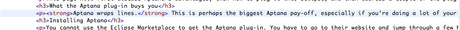
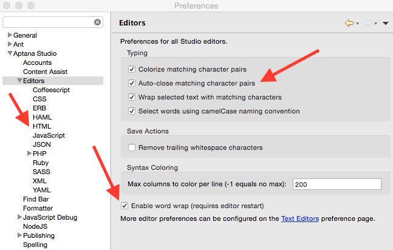
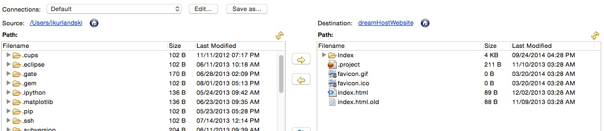
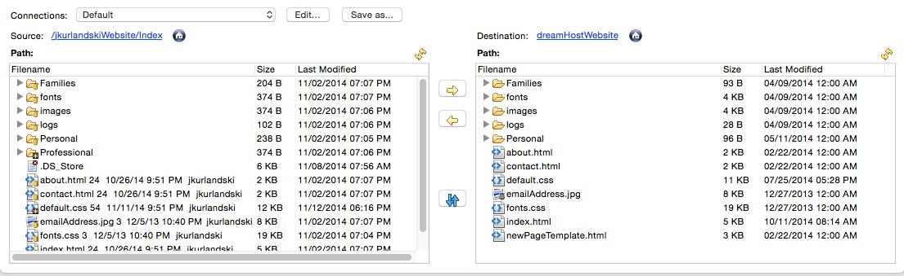
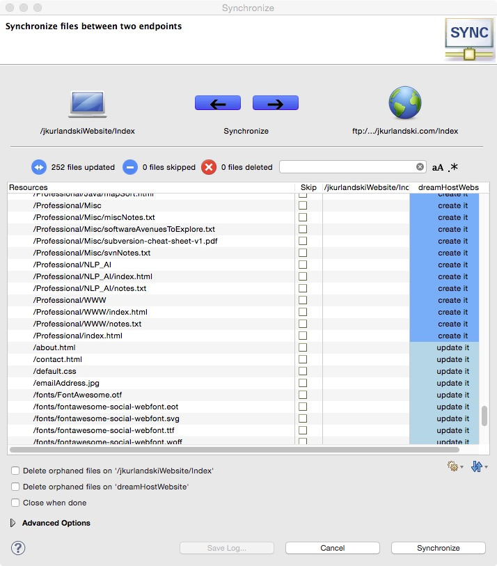
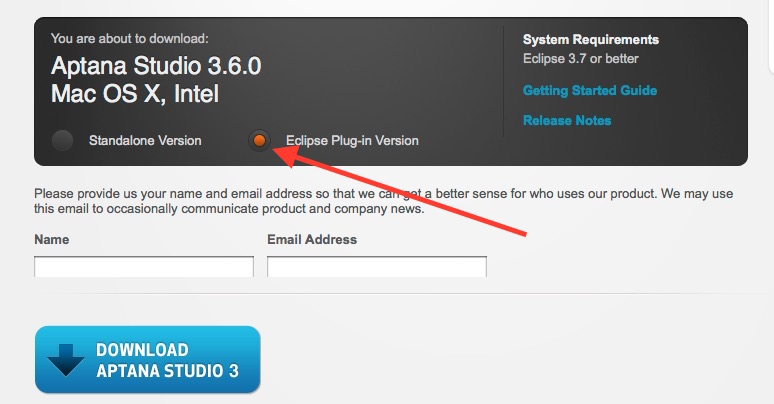
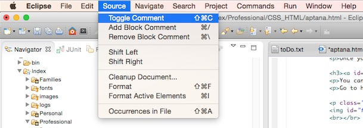

The Aptana Eclipse Plug-In
Aptana's Eclipse plug-in offers a few very useful tools. This page will give you a quick run-down on how to get them and how to use them. The Aptana website boasts that the plug-in is useful for development with Javascript, Ruby on Rails, PHP and Python—in addition to CSS and HTML. I have not used it with any of the former. For working with HTML, the tool is a big help in that it:
- Wraps lines (especially useful on a laptop)
- Automatically inserts matching </p> tags
- Allows remote system synchronization
This page will first discuss Aptana's advantages, then how to plug it into Eclipse, and then address a couple of the plug-in's more annoying features.
Aptana Pluses
Aptana wraps lines.
This is perhaps the biggest Aptana pay-off, especially if you're doing a lot of your work on a laptop. The Elipse HTML editor does NOT wrap lines, so, once you start a <p>, it will go on forever on the same line, and you'll have to use the scroll bar to see anything on the far right-hand side. Here is what part of the first draft of the very paragraph you're reading looked like without line-wrapping.
Screenshot 1: Without wordwrap
Now compare the above, where the line is cut off, with the below, in which you can see the entire paragraph.
Screenshot 2: With wordwrap

To turn on line wrapping, go to Preferences > Aptana Studio > Editors, and check the "Enable word wrap" box. See the bottom red arrow in the screenshot below.
Screenshot 3: Aptana preferences page
Aptana automatically inserts some matching tags.
Let's be honest: the string "</p>" forms a very unpleasant, if not literally painful, sequence of characters to type. So Aptana is being very helpful when it fills in the closing </p> for you. The plug-in is supposed to fill in matching end tags generally, not just the paragraph tag, but I have not yet been able to get that to work consistently. (Though it does work consistently for <b></b> and <i></i>.) Control of this option has been placed in the Content Assist box, reached via Preferences > Aptana Studio > Editors > HTML. In Screenshot 3 above, the left-most arrow is pointing toward the HTML node.
Aptana allows remote system synchronization.
Suppose you're like me: you first make changes to your website on your computer; you test those changes locally; and only when everything looks right do you export the changes to your live website. The question is—how do you get those changes to your website? You don't want to upload all your files, since, depending on the number of files contained in your website, this could take a very long time. As I see it, there are two options. The better option is to upload your changes to a respository in the Cloud somewhere, and at your website synch up with the repository.
But if you're not comfortable with using a respository like Subversion—or if your website is in an early stage and you're just not there yet—a second option is to use a tool like Aptana's. In Eclipse, this functionality is put into a view. Go to Window > Show View > Remote Systems. If the "Remote" option isn't visible, go to Window > Show View > Other > Studio > Remote.
Here is what you'll need before you can set up a connection to your website: (1) an FTP address at your host provider where your files reside; (2) your user ID for FTP at your host provider; and (3) your password.
Here is how you set up a new connection. In the Remote System Details window, right click on Local and select New Connection. You will probably see several panels, but the one you're looking for is a tab, usually at the bottom, that looks like this.
Screenshot 4: Remote System Details tab

Click on the globe at the top right to create an FTP site. The dialog box in the screenshot below appears. Fill it in. The Site Name box can be any name for this connection to your website, for example mySiteAtDreamHost if your host is DreamHost. The Server field will be the FTP site which is your target. After filling in your user name and password, you might want to check the Save box at right if you don't want to have to type in your password every time you connect. And, finally, the RemotePath field gives you the chance to connect to some subdirectory on the FTP location. Test your configuration by clicking on the Test button. You might have to create a few connections until you've got everything set up correctly.
Screenshot 5: Dialog for creating an FTP conncetion

On the Remote tab you'll now see a remote connection. Click on the arrow to open it; if you've filled everything in correctly you should be able to view everything on your target site.
The Aptana Synchronize application now knows where the remote connection is. What it doesn't yet know is where in your filesystem on your computer sit the files that correspond to the files on your website.
Let's set that up now. Right-click on the connection icon and select Transfer Files.
You’ll see two panels, as in the screenshot below. The one on the left represents your file system; the one on the right may take several seconds to update, but eventually it will display the files on your FTP target.
Chances are, the panel on the left is pointing to some generic location on your computer. See below.
Screenshot 6: Parallel panels representing local and remote file systems
To tell the sychronization tool where in your file system it should be synching from, click on the Edit button. There are a number of options in this dialog box (see below), but we're going to keep things simple. Click on the Project radio button. This tells the set up wizard that the current Eclipse project is where you want it to look. If there are multiple directories in the workspace, you may have to use the up-and-down arrows at the right of the path to select the right one. After you've done this hit Apply and OK.
Screenshot 7: The Connection Manager

I've always found Aptana's Remote Synchronization app to be a little annoying at this point. You might say "buggy," even. What is probably going to happen to you is a series of tries, failuires and retries, until finally you get the thing configured right. The paragraph below describes what may or may not be your experience during the trial-and-error period. Screenshot 8 below that describes what "configured right" looks like. Good luck.
You'll find yourself back at the original configuration window. Save your configuration by clicking on the Save As button. Give it any name you want, but "Default" works, too. What may happen is a new tab will open with Default as its title. Clicking on the Edit button may show two connections with the same name, and a complaint that the configuration of one has errors. Try strategies such as the following: renaming one of the connections with a duplicate name; deleting one of the connections by clicking on the red X; refreshing the connection by clicking on the two yellow arrows pointing in opposite directions. At the end of it will hopefully be two panels which resemble the screenshot below. Note: I've also found that sometimes to see the changes you've made, you have to close the Default tab, go down to the Remote tab in the window below, right-click and select Transfer Files.
Screenshot 8: Properly set up parallel panels representing local and remote file systems
The most important thing is that the left and right panels be looking at the same "level" in their respective file systems. In the screenshot above, the two file systems—local on the left, remote on the right—are looking at the same level. Compare this to Screenshot 6, where they are not looking at the same level. Once you've managed this, you're ready to synchronize. Although, maybe not: one time I had trouble synchronizing immediately after setting up the connection. The Eclipse windows were suffering from refresh issues. But after I closed and reponend Eclipse everything was fine.
Here is how you synchronize. Let's assume that you are starting from Eclipse's Java view. Go to View > Other > Studio > Remote. The Remote tab may now appear in a location that you've never seen it in—maybe on the left if you're used to seeing it on the bottom. They're just trying to blow your mind. Don't let them. In the Remote tab, wherever it might be, select your website connection. Right-click and go to Transfer Files. What should now appear are the two panels you see in the screenshot above. In between the left and right panels are a vertical series of buttons. Click on the blue one—whose tip reads "Synchronizes all the files between the two end points."
A new dialog box pops up, looking like the screenshot below.
Screenshot 9: You're ready to synchronize
It's very important that you check the values of the right-most column. If a file is marked as "create it" and you haven't changed it, or only modified it, since your last synchronization—then surely there is something wrong with your configuration. The local and the remote file systems are probably not "at the same level," as described above. Click on the cancel button and try setting up again. If you proceed with the synchronization, files will be put in the wrong location, and your website will probably become unusabale. (I know, I've done this.)
Once you've checked that the files are correctly marked as "create it," "update it," and so on—and once you've clicked the middle "Skip" checkbox for any files which should not be transfered—you're ready. Click on the blue Synchronize button, and let Aptana do its work.
Installing Aptana
You cannot use the Eclipse Marketplace to get the Aptana plug-in. You have to go to their website and jump through a few hoops But the features described above make it worth your while. Here, then, is how I managed to install it, after several fruitless attempts by other means. (Two things worth noting: (1) For some reason the download wouldn't work on the Mac version of Firefox—I had to use Safari. And (2), this is how I installed Aptana 3.6.0 onto the STS version of Eclipse in November of 2014—of course, anything could change at some point in the future.)
Go to http://www.aptana.com/products/studio3/download, or if that link is dead, search on "download Aptana studio eclipse". You're looking for a page that has the radio buttons and the download button like the image below. It's not immediately apparent, but the download page has two options—the Standalone Version (the default) or the Eclipse Plug-in Version. See the radio button the red arrow is pointing at. Make sure you select the plug-in version, then click the Download button.
Screenshot 10: Aptana download page
The above steps bring you to a new page. The instructions will tell you to copy a URL to your clipboard and install from Eclipse. I found the remainder of the install process pretty easy.
PyDev issue. If you have the PyDev plug-in for Eclipse, the installation process will remove it after notifying you that it is going to do so. The is because the latest (3.6) version of Aptana comes with its own version of PyDev. I have not (yet) played around with Aptana's version of PyDev.
Java code issue. I have two projects in my Eclipse workspace—one in Java, and one in HTML. After installing the Aptana plug-in, my Java project would no longer build. The install completely wiped out the Java Build Path in the project’s Properties. I had to check the Java 7 box and reconfigure the project with all my .jar files.
Aptana Annoyances
Aptana's annoying apostrophe issue
By default, Aptana auto-closes matching character pairs. What this means is that when you type the first of a "character pair" (for example, the left-hand side of a pair of parentheses or curly braces, or single- or double-quotes), it automatically types the matching right-hand side of the pair for you. Your job is simply to fill the inside of the pair with whatever you want to type; then you hit the Tab key, which brings your cursor to the outisde of the pair, and you can go on your merry way with whatever you want to type.
This can sometimes come in handy. The problem is that Aptana considers the single quote a matching pair. And the single quote is the same as an apostrophe. Which means that whenever you use an abbreviation—or the possessive "'s", you end up with an unnecessary matching apostrophe. And that is a pain to delete. The bother of deleting the unwanted apostrophe is much greater than the convenience of the matching character pair. So my vote is, remove the option. How to do that? Go to Preferences > Aptana Studio > Editors, find the "Auto-close matching character pairs" option, and uncheck that option. See the <strong>topmost</strong> red arrow in Screenshot 3.
Loss of toggle comment
The default version of Eclipse offers a very handy "Toggle Comment" command. This inserts the appropriate symbols to make the current line commented out. It works in both Java and HTML.
Screenshot 11: Eclipse's Toggle Comment tool
When you open a file with Aptana, however, you lose this facility, and I've hunted all over the Aptana UI without being able to find where the option has gone off to. The upshot is that more than once I have found myself opening an HTML page with both the normal Eclipse editor and the Aptana editor, using the former for the line-comment-out option, and the latter for the Aptana Pluses described above.